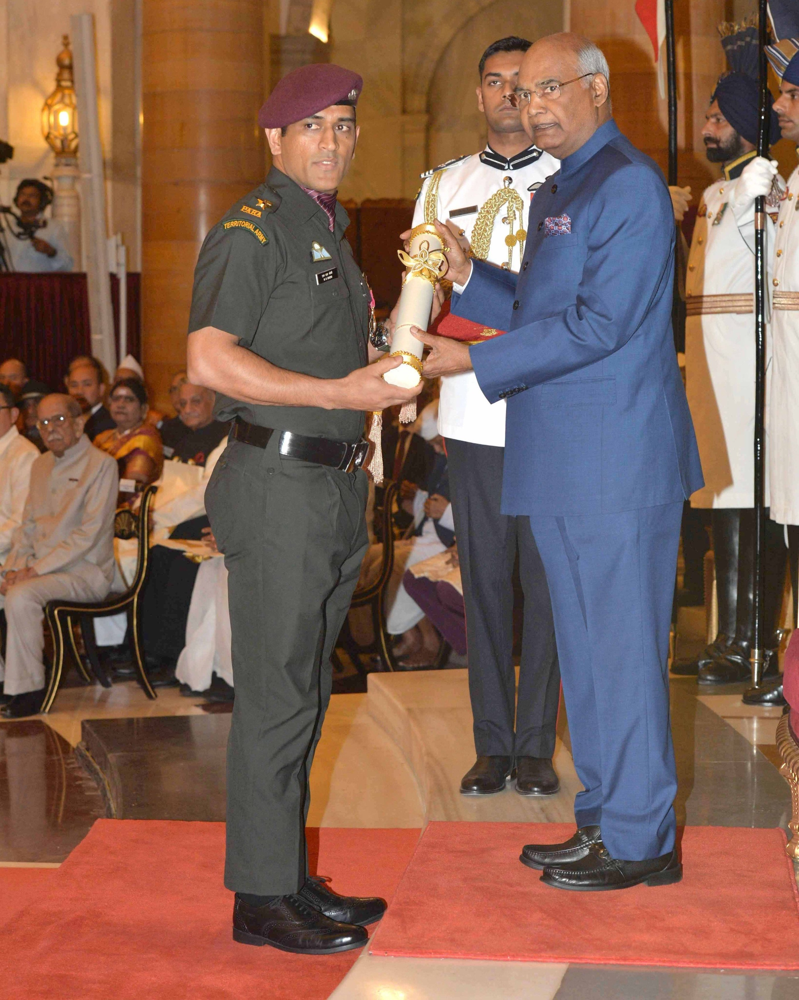

Padma Shri Award

Padma Vibushan Award
ICC Men's ODI Team of the Year
Mahendra Singh Dhoni, commonly known as MS Dhoni, is a former Indian international cricketer and one of the most successful cricket captains. Born on July 7, 1981, in Ranchi, Jharkhand, Dhoni is known for his calm demeanor, leadership skills, and exceptional cricketing abilities.
| Full name | Mahendra Singh Dhoni |
|---|---|
| Born | 7 July 1981 (age 42) Ranchi, Bihar (present-day Jharkhand), India |
| Nickname | Mahi, Thala, Captain cool[1] |
| Height | 1.80[2] m (5 ft 11 in) |
| Batting | Right-handed |
| Bowling | Right-arm medium |
| Role | Wicket-keeper-batter |
| Tournament | Representing | Achievement |
|---|---|---|
| Indian Premier League | CSK | Winner 2010 |
| Winner 2011 | ||
| Winner 2018 | ||
| Winner 2021 | ||
| Winner 2023 | ||
| Champions League | CSK | Winner 2011 |
| Winner 2014 |
| Tournament | Achievement | Host Countries |
|---|---|---|
| ICC ODI World Cup | Winner 2011 | India–Bangladesh–Sri Lanka |
| ICC T20 World Cup | Winner 2007 | South Africa |
| Runner-up 2014 | Bangladesh | |
| ICC Champions Trophy | Winner 2013 | England and Wales |
| Runner-up 2017 | England and Wales | |
| ACC Asia Cup | Winner 2010 | Sri Lanka |
| Winner 2016 | Bangladesh | |
| Winner 2018 | UAE | |
| Runner-up 2008 | Pakistan |
"I don’t regret anything in my life. What does not kill you makes you stronger"